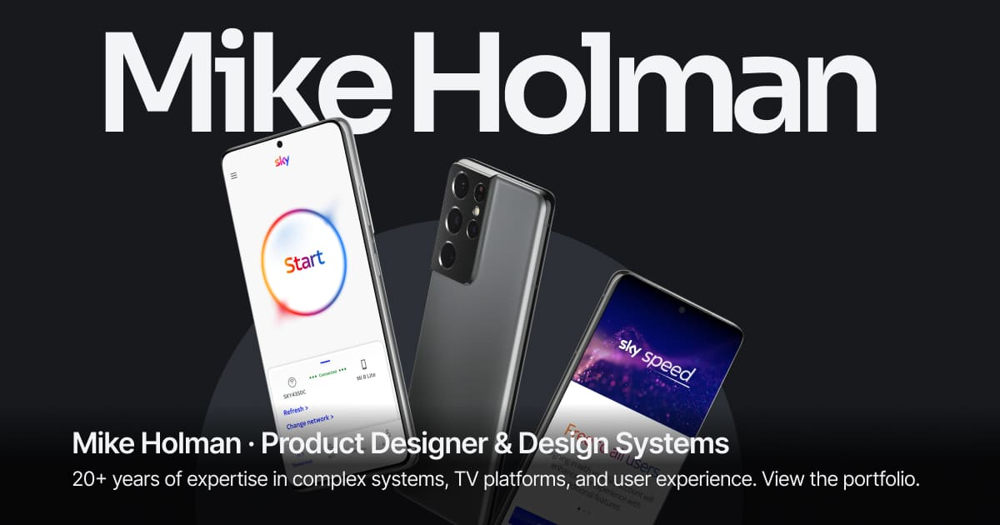

Simplify The Core Journey
The experience focused on a single primary action:
Start a speed test.
Everything else was designed to support that journey.
Product Design Concept
A UX concept exploring how broadband speed testing could be transformed from a technical utility into a clear, trustworthy and actionable customer experience.

Overview
Broadband speed tests are one of the most widely used digital tools in telecommunications, yet many feel overly technical, cluttered or difficult to interpret.
This project explored how a mobile speed-testing experience could help customers understand not only how fast their connection is, but also what that speed means in practical terms.
The goal was to create a simple, trustworthy and user-focused experience that balanced customer needs with business objectives.
The challenge
Traditional speed-testing applications often prioritise technical data over usability.
Many existing solutions suffered from:
The challenge was to turn a technical process into an experience that was useful, approachable and easy to understand.
My role
I was responsible for the end-to-end concept design including:
Understanding The Problem
I began by exploring a range of existing speed-testing products.
Several themes quickly emerged.
Applications asking for extensive device permissions before delivering value felt less trustworthy and potentially intimidating for less technical users.
Many free speed-testing tools relied heavily on advertising, often creating visual clutter or causing accidental interactions.
Most applications explained connection performance poorly.
Users could see upload and download numbers, but often struggled to understand what those numbers meant in their day-to-day lives.
These observations became the foundation of the design direction.
Approach
The experience focused on a single primary action:
Start a speed test.
Everything else was designed to support that journey.
Instead of focusing purely on technical metrics, results would be translated into practical outcomes and recommendations.
The interface avoided unnecessary complexity and reduced visual distractions.
Transparency and clarity became key design principles.
The concept explored opportunities to provide additional support, account services and personalised recommendations after a test had been completed.
Design System
The interface adopted a clean and modern visual language inspired by existing broadband and telecommunications experiences.
A consistent 8-point grid system was used throughout the design.
Typography was based on Sky Text and selected to remain clear and legible across a variety of device sizes.
Icons were used to support navigation and improve scanability while maintaining visual consistency.
Colours were derived from existing design guidelines to ensure consistency throughout the experience.
Key features
Most speed tests provide measurements but little context.
Results were paired with explanations and recommendations to help users understand what their connection could realistically support.
A more useful and accessible interpretation of broadband performance.
Speed tests are often treated purely as acquisition tools.
The experience was designed to provide genuine value regardless of customer status.
Enhanced features would be available to account holders without restricting the core experience.
A customer-first experience that remained commercially relevant.
Users experiencing poor performance often don't know what to do next.
The concept introduced support journeys allowing users to submit results, access help and investigate potential issues.
Customers are guided towards resolution rather than being left with unexplained data.
Connection speed can be influenced by more than broadband performance alone.
The design included network and device information, helping users understand factors affecting results.
Better user understanding and reduced confusion.
User Experience Design
Existing products were reviewed to identify strengths, weaknesses and opportunities.
Detailed flows were created covering:
These journeys helped validate the overall experience before moving to visual design.
Wireframes were used to refine hierarchy, navigation and interaction patterns before progressing into high-fidelity concepts.
Selected screens
A focused entry point built around a single primary action.
A real-time testing experience showing progress and connection status.
Tools for understanding and managing available connections.
Enhanced functionality for customers seeking help or personalised recommendations.
Impact
Although developed as a design concept, the project demonstrated how a traditionally technical utility could be redesigned around customer understanding and trust.
The work showcased:
Most importantly, the project reinforced the value of simplifying complex information and presenting it in a way that customers can easily understand and act upon.
What I Learned
If I revisited the project today I would:
Gallery